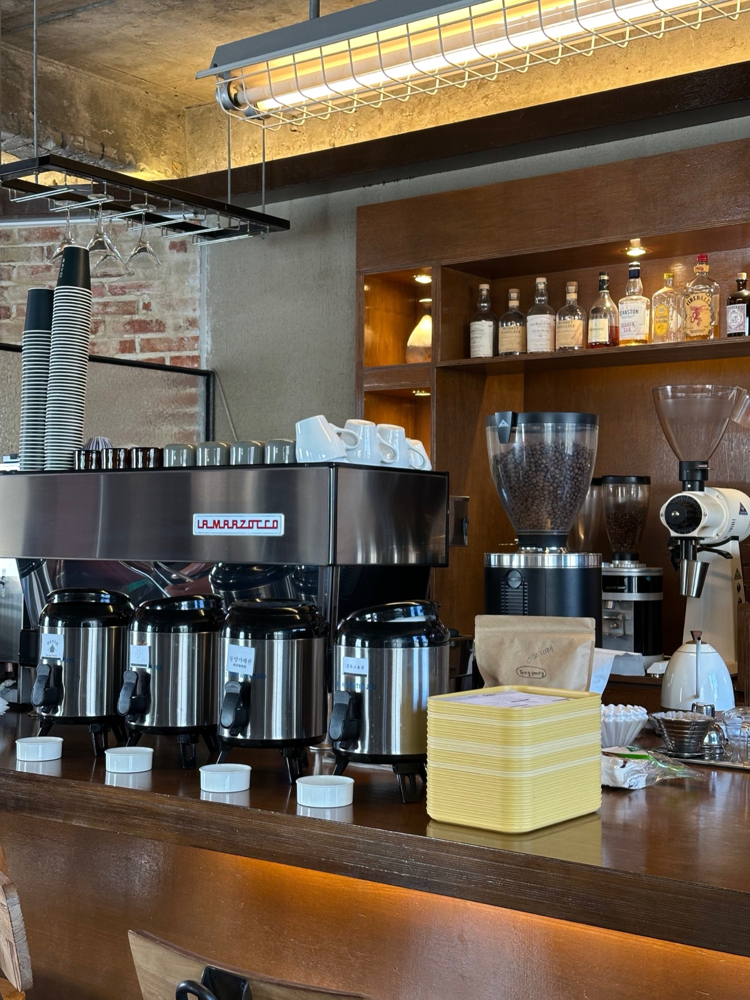
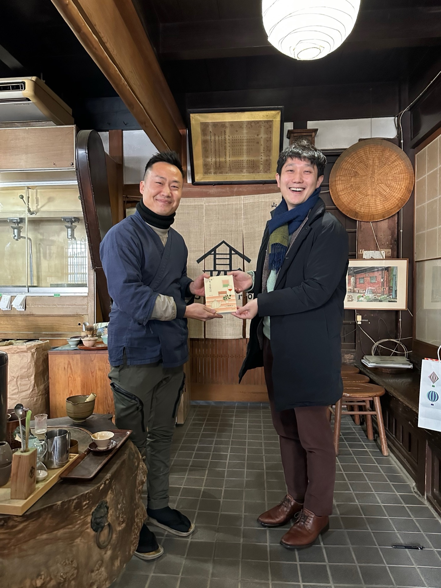

Project / Waterfront Housing
Harbor Walk Atlas

Harbor Walk Atlas turns a former logistics edge into a softer residential waterfront by treating movement, view, and public access as the first design layer rather than an afterthought.
The brief
The project began as a study of how a new neighborhood could open onto the water without becoming exclusive or over-programmed. Instead of one iconic object, the proposal uses a sequence of small public thresholds, sheltered retail edges, and housing courts that gradually intensify toward the shoreline.
Each building parcel is organized around everyday routes: walking to transit, cutting through to the market, or sitting at the edge long enough to watch the weather shift. The work focuses on atmosphere and use patterns as much as land use efficiency.


What changed
The industrial edge is replaced with a terraced public walk that absorbs level changes and allows multiple speeds of use. Ground floors alternate between community-facing rooms, workspaces, and smaller food programs so the frontage remains active across the day.
Housing entries are set slightly back from the promenade, creating a careful gradient between fully public and semi-private life. This lets residents feel protected while preserving generous views and access for the wider city.
Why it matters
Many redevelopment projects promise openness while quietly privatizing the water's edge. Harbor Walk Atlas argues for a different balance: one where housing value is strengthened by a more public shoreline, not by restricting it.
The proposal is ultimately about legibility. If people can see where to walk, where to sit, and where to enter without instruction, the district already begins to feel shared.